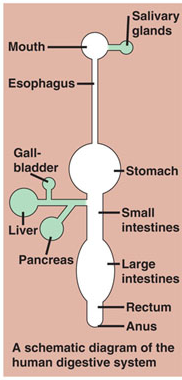
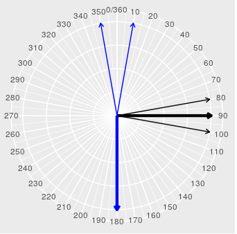
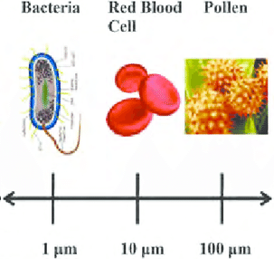
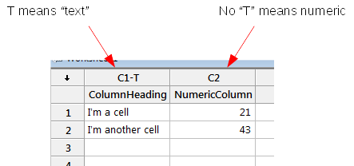
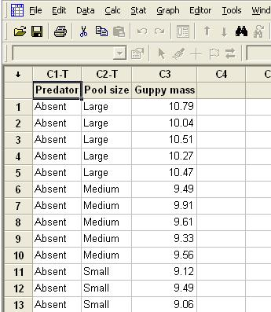
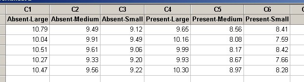

Variables and science
When scientists seek to understand a system, their approach is to identify the components that make up the system, measure the properties of the components, and then measure the relationships between the components.
| 
The components of a system are anything that the scientist thinks might be important to the system's functioning. In the schematic illustration to the left of the human digestive system you can see there are several major components labeled. When a scientist begins to study a system that isn't yet understood, he or she may not know which components are important, and a simple schematic model like this one would represent a hypothesis about how the system functions. We actually understand digestion pretty well, enough to know that the diagram isn't complete, because it leaves out regulation by the brain, effects of hormones, influences from the environment, effects of intestinal parasites, or any other of the dozens of factors that have some effect on how digestion works in the body. However, the components that are most important for doing the work of breaking down food into its constituent chemicals and absorbing them into the blood stream are represented here. Once a scientist identifies the components to be studied, he or she has to measure their properties. We measure properties of components by defining variables that characterize them. We might use a variable called "salivary gland weight" to measure the size of the salivary gland, or "stomach volume" to measure how much space for food is in the stomach, or "pancreatic enzymes" to list the enzymes the pancreas secretes for digestion, or "passage time" to measure how long it takes for a meal to pass through the system and exit the body. More than one property for each component may be important, and we may need more than one variable - for example, the small intestine is where digested nutrients pass into the blood stream, so we may want to measure "small intestine length" as one property of the small intestine, and "small intestine surface area" as another property of the small intestine, both of which are possible ways that the body can influence how well food is absorbed. This may all seem natural, and a little obvious, based on your experiences in science lab classes you've taken. But, in your previous classes your instructors probably defined all the variables you used for you, and you may not have had to think much about how variables are defined, or even why it's important to do so. To understand why defining variables is important in scientific work, consider that the structured approach to studying nature is not the only way to proceed. For example, we could instead watch some people eating and record whatever we notice during our observations. As we observe different people, we may notice different things - maybe the first person is a fast chewer and the second person seems to chew more slowly, and a third barely chews at all. We may hear stomach noises after a meal for one and write that down. We may notice that one person is heavier than the others, and record that. While observing one person we may notice that materials that leave the body look (and smell) different from the materials that enter it. Once we have a large collection of observations, we could try to figure out what they tell us about how the body digests food. |
That is, we could proceed this way, but such a haphazard approach would make it extremely difficult to understand the system. Without a guiding hypothesis about what the important components are, and without a consistent set of measurements recorded on well-defined variables that represent their important properties, and without making the same measurements in the same way for each person, it would be difficult to even describe the consistent features of digestion, much less figure out how the system works.
Making measurements of variables produces data. In everyday usage data is a general term that refers to any factual information that is recorded, even if it comes from a haphazard method of collecting information. When scientists talk about data, however, they are usually referring to measurements of carefully defined variables. Defining variables is an important part of the structured approach that scientists take to understanding the systems they study.
Defining variables - types and measurement scales
It's important to define variables correctly, because all of the
choices we make in how we graph, summarize, and make sense of our data
depend on the variable type. We can make a fundamental distinction
between variables that are numeric
or non-numeric (also called categorical or attribute
variables). Numeric variables are made up of numbers, whereas
non-numeric variables are made up of labels (such as tree species, sex,
or color).
Numeric variables
Numeric variables are made up of numbers by definition, but we can make a distinction between numeric variables that can take any value on the number line (in which case the variable is continuous), or instead can only be a particular set of numeric values (in which case the numbers are discrete). Continuous variables can be expressed as decimals, or equivalently as ratios (e.g. 10.1 can be expressed as 10 1/10). The integers 0,1,2,3,4... are a good example of discrete numbers that do not include decimal values. A common type of discrete variable in biology is a count (of cells on a slide, of species in a forest, etc.).
Be careful in using the presence of decimals, by the way, to tell whether a variable is discrete or continuous. If we are counting the number of fertilized seeds we find in apples the possible numbers are 0, 1, 2, 3, 4, and 5. We could express these as proportions if we divide the number of apple seeds we find by 5, which is the largest number possible, which would give us 0, 0.2, 0.4, 0.6, 0.8, and 1. Even though these numbers have decimals there are still only five possible data values, so we would consider them to be discrete. To tell if a numeric variable is continuous or discrete, ask whether it's possible for the variable to take any value on the number line - if so, it's continuous, and if not it's discrete.
We can further distinguish between different measurement scales for numeric variables that affect what kinds of mathematical operations we can and cannot apply.
Measurement scales for numeric variables
Some numeric variables are measured on a circular scale. Obvious examples of circular variables would be recordings of angles or directions, that are measured in degrees. However, any variable with values that repeat are circular variables, including time of day, and date (if we only consider the number of days since the first of the year, without the calendar year included). Since numbers repeat on a circular scale the starting point is arbitrary - 0 degrees is placed at the top of the compass in the illustration below, but it could be placed anywhere we want by rotating the compass. Numbers on a compass increase up to 360 degrees, at which point the numbers start again at 0 - 360 degrees and 0 degrees are the same point on the compass.
| 
Imagine that we conducted a simple orientation experiment on some homing pigeons, in which we moved two pigeons away from their roost and released them, and then recorded the direction they flew away. The thin black lines on the compass to the right represent one possible outcome, in which one pigeon flew at 80 degrees and the other flew at 100 degrees. The average of 80 and 100 is 90, and the thick black line pointing to 90 shows that the average direction is right between the two measured directions. So far nothing unusual. But, the pigeons could just as easily have flown at 10 degrees and 350 degrees, like the two thin blue lines. The middle of these thin blue lines is 0/360, so that is where the average angle should go. However, because 350 and 10 cross over the point at which the numbers on the scale repeat, taking an average of these two flight directions gives us 180, which is as wrong as it can possibly be. There are methods for calculating a mean angle that work correctly, but unfortunately they are beyond the scope of this class, and we won't spend time on them now. For now, what you should learn from this simple example is that it's important to know when your numeric variable is on a circular scale so that you don't apply an inappropriate mathematical operation to your data. |
The two measurement scales for continuous numbers that we will encounter throughout the semester are ratio scale and interval scale. In contrast to circular scale variables, both ratio and interval scales are linear, which means that possible values fall between negative infinity to positive infinity without repeating. The easiest way to understand the difference between ratio and interval scale variables is to think about what a measurement of 0 means on each scale.
| 
Ratio scale variables have a true zero, in the sense that 0 indicates a lack of the quantity. Most measured dimensions, like these cell diameters, are ratio scale because a diameter of zero means "no diameter". Because the zero is meaningful, it's valid to say that a 100 μm pollen grain is 10 times as big as a 10 μm red blood cell - that is, ratios of numbers on a ratio scale are meaningful. We deal with lots of measurements of physical dimensions and quantities in Biology, and such measurements will almost always be ratio scale. Consequently, most numeric variables you will encounter in this class are ratio scale. |
 Interval scale variables do not have a true zero, in that 0 does not indicate a lack of a quantity. Temperature in Fahrenheit or Celsius are good examples of interval scale variables, because 0 degrees F or C does not mean "no temperature". Since the 0 isn't meaningful, it isn't correct to say that the boiling point of water is 6.625 times hotter than the freezing point of water (212/32 = 6.625). If we did the same calculation with the equivalent temperatures in degrees C we would get 100/0, which is different from the calculation in degrees F (division by 0 is undefined). You will encounter fewer variables in Biology on an interval scale, but the few that we do use (like temperature) are used commonly.
|
To sum up the information on measurement scales for numeric variables:
| Measurement scale | Numbers used: | Zero indicates: | Mathematical operations that are appropriate |
|---|---|---|---|
| Ratio | Values from negative infinity to positive infinity | A lack of the quantity | Addition, subtraction, multiplication, division |
| Interval | Values from negative infinity to positive infinity | A position on the number line | Addition, subtraction |
| Circular | Values that repeat (angles from 0 to 360, times of day) | A position on the circular scale | Only use methods designed for circular variables |
Categorical (non-numeric) variables
Non-numeric variables are made up of named categories, called levels. Examples of non-numeric variables are color (made up of the levels blue, green, red, etc.), state (made up of the levels California, Oregon, New Hampshire, etc.), and name (made up of the levels Bob, Carol, Ted, Alice, etc.).
Measurement scales for categorical
variables
Non-numeric variables also have measurement scales, but they are different from numeric scales. Categorical variables that have levels with no natural ordering are called nominal scale variables. Since colors, state names, and names of people are just labels, with no natural ordering to them, they are all nominal scale categorical variables.
However, some categorical variables do have a natural order, even though they are not numbers - for example, if we have a categorical variable "health status" made up of the categories "healthy", "sick", and "dead", there is a clear natural ordering from best to worst of healthy, sick, dead. Categorical variables with levels that have a natural ordering are called ordinal scale variables. The amount of difference between the levels of an ordinal scale variable are not defined - how much better it is to be healthy than sick, and whether the difference between healthy and sick is the same as between sick and dead isn't clear, even though the ordering is. Many mathematical operations can't be done on ordinal categorical variables, but we can take the ordering into account when we graph data, and in some types of data analysis that we will encounter later in the semester.
Identifying variable types
and measurement scales
Now you can check yourself to see how well you're understanding
variable types and measurement scales. The table below is typical of the
kind of data we might work with:
| Student name | Height (in.) | Number of Facebook friends | Internet usage | Internet usage | Sex | Bed time |
|---|---|---|---|---|---|---|
| Bob |
70 |
20 | Moderate | 2 | Male | 23:00 |
| Jane |
64 |
8 | Light | 1 | Female | 23:30 |
| Rick |
72 |
150 | Heavy | 3 | Male | 1:00 |
| Alma |
63 |
75 | Moderate | 2 | Female | 22:00 |
| ... |
... |
... | ... | ... | ... | ... |
See if you can identify the variable types - click the links to check your answers:
Student name - what is the variable type, and what is the measurement scale? Click here to see if you're right.
Height in inches - what is the variable type, and what is the measurement scale? Click here to see if you're right.
Number of Facebook friends - what is the variable type, and what is the measurement scale? Click here to see if you're right.
Internet usage - there are two different versions of this variable in the table, one that uses categories, and one that gives numeric codes for the categories. What are the variable types, and what are the measurement scales? Does converting the category names to numeric codes change the variable type? Click here to see if you're right.
Sex - what is the variable type, and what is the measurement scale? Click here to see if you're right.
Bed time - what is the variable type, and what is the measurement scale? Click here to see if you're right.
Organization of data
| 
We will be using MINITAB as the data analysis software for this class, and MINITAB organizes data in tables it calls worksheets that are organized as a grid of rows and columns of cells. Data are entered in cells, like the illustration to the left, and the first row of cells is labeled with a row number 1. Above the first row of cells is a row for column labels which are used to identify the data in the column ("ColumnHeading" and "NumericColumn" are column labels). The column numbers are above the column labels, and are shown as C1, C2, and so on. You may have worked with worksheets in Excel before, and although they look very similar, MINITAB's worksheets are less flexible than Excel's. In MINITAB each column must contain a single variable, and the columns are assigned a variable type. MINITAB only has two variable types that it recognizes, either numeric or "text" (i.e. categorical), and it decides which variable type the column is when you enter the first data value. The "T" after "C1" indicates that C1 is a text column. Now that C1's type is set to "text", even if you entered numbers in C1's cells MINITAB would treat the numbers as categorical values. Likewise, column C2 is a numeric column, and attempting to enter anything other than numbers will produce an error message. So, MINITAB does recognize different variable types, but only distinguishes between numeric and non-numeric (text) variables. It's up to you to know what kind of numeric or text variable you're working with, and to know the measurement scale of the variable, because MINITAB doesn't make this distinction for you and will happily apply the wrong analysis to your data if you ask it to. |
Even with MINITAB's inflexibility about data types, there are still some choices to be made about how to organize your data. MINITAB allows us to use either a stacked or an unstacked organization for our worksheets.
| 
Stacked data uses one row in the worksheet for each observation, and each column represents a variable recorded for that observation. In the example to the left you can see the first 13 rows from 30 total with some data on masses of guppies recorded from pools in Trinidad. Everything recorded about a single pool is entered in a single row. For each pool we have data on average masses of guppies (in column Guppy mass), whether the pool had predators present or not (as indicated by the Predator column - the "Present" rows are all off the screen), and the size class of the pools (as indicated by Pool size). |
Stacked data organization has many advantages:
- It is easy to analyze. Data analysis software (MINITAB, Excel, R) can easily use the levels of a categorical variable to group data for analysis. For example, we could easily calculate averages of guppy masses grouped by predator status, by pool size, or by the combination of the two. We can also easily count up how many pools had each level of Predator, each level of Pool Size, or combinations of the two as well.
- It is self-explanatory. Because each column is a variable, we can use the column labels to identify what each variable is. Since the rows correspond with measurements from a single pool, we know that all the data in row 1 pertains to one pool, all the data in row 2 pertains to another pool, and so on.
- It is easy to extend. If we collect additional data about the pools (such as the temperature of the water, or the surface area of the pool), we can add it to the data set by simply adding more columns. If we measure more pools we can just tack on some additional rows of data.
The only real disadvantage of stacked data is that it isn't very space efficient, because the same pieces of information have to be entered multiple times - for example, we have to enter the word "Absent" 15 times and "Present" 15 times, once for each pool. With 30 pools measured on three variables it takes 30 x 3 = 90 cells to record all of guppy masses, predator information, and pool size information.
| 
The other way that MINITAB allows us to organize our data is an un-stacked arrangement, which is shown to the left. This is the same data set as in the stacked example, it is just organized differently. With un-stacked data only the average masses are recorded in the cells of the worksheet. Each column label identifies the combination of predator status and pool size for the guppy masses in that column. |
The un-stacked approach is more compact than the stacked data approach - it only took 30 cells to record the 30 guppy masses using an un-stacked organization, compared with the 90 cells we needed for a stacked arrangement. With only 1/3 as many cells, the data file would be smaller for an un-stacked data set than for a stacked version of the same data.
However, un-stacked data's file size advantage is overshadowed by some serious disadvantages.
- Un-stacked data is less self-explanatory. We are using combinations of predator status and pool size as column labels, but the columns are labeled using levels of two different categorical variables, and the variable names don't appear at all. The variable name "guppy mass" also doesn't appear in the data set, so it isn't obvious what the numbers in the cells are. We could use file metadata, which is data attached to a digital file that describes what the file contains, to explain what the numbers in each column are, but it's more obvious and self-documenting when we can use column names that identify the variables directly.
- It's not as easy to analyze. MINITAB figures out groupings to use to analyze data by looking at the levels in categorical variables in the data set, but there aren't any categorical variable columns in this un-stacked data set. If you wanted to average guppy mass by pool size (ignoring predators) MINITAB isn't able to tell that Absent-Large and Present-Large are both Large pools, that Absent-Medium and Present-Medium are both Medium pools, and that Absent-Small and Present-Small are both Small pools, because MINITAB doesn't understand grouping variables that are embedded into column headings.
- Rows don't mean anything. In un-stacked data, a row in the table is no longer a single pool, so there is no particular meaning to the fact that data values occupy the same row - that is, the 10.79 mass for the first row of Absent-Large isn't actually matched in any way with the 9.49 mass for Absent-Medium.
- It's difficult to add variables to the data set. Since rows no
longer correspond with pools, if we wanted to add additional variables
about the pools to the data set we can't just add on additional
columns to hold the new variables.
In general, stacked data is the better data organization for raw, un-summarized data, even though it requires some more data entry work and creates larger files. Given all its advantages, stacked data will be used for essentially all the data sets you encounter in class, and you will use this approach with the data you collect for your class project.